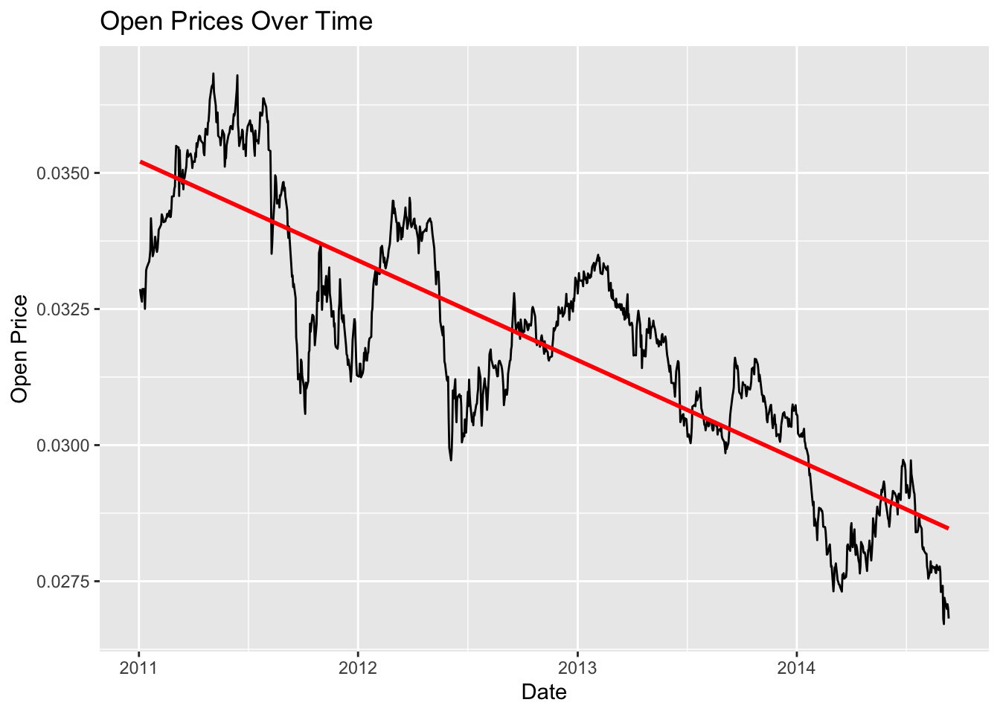
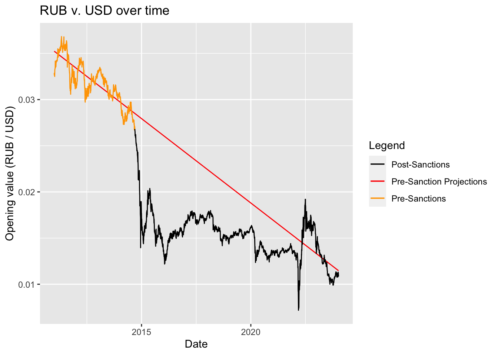

Rows: 5245 Columns: 7
── Column specification ────────────────────────────────────────────────────────
Delimiter: ","
chr (6): Open, High, Low, Close, Adj Close, Volume
date (1): Date
ℹ Use `spec()` to retrieve the full column specification for this data.
ℹ Specify the column types or set `show_col_types = FALSE` to quiet this message.
#plotting using ggplot pre_sanc data and LRMpre_sanc|>ggplot(aes(x = Date, y = Open)) +geom_line()+geom_smooth(method ="lm", se =FALSE, col ="red")+#Using LM with `Open` to predict `Date`labs(title ="Open Prices Over Time", x ="Date", y ="Open Price")
`geom_smooth()` using formula = 'y ~ x'

#Creationg of LRM trained on pre_sanction opening prices pre_sanc_LRM <-lm(pre_sanc$Open ~ pre_sanc$Date, data = pre_sanc)summary(pre_sanc_LRM)
Call:
lm(formula = pre_sanc$Open ~ pre_sanc$Date, data = pre_sanc)
Residuals:
Min 1Q Median 3Q Max
-0.0032581 -0.0009242 0.0001658 0.0009552 0.0023954
Coefficients:
Estimate Std. Error t value Pr(>|t|)
(Intercept) 1.102e-01 1.517e-03 72.63 <2e-16 ***
pre_sanc$Date -5.005e-06 9.689e-08 -51.66 <2e-16 ***
---
Signif. codes: 0 '***' 0.001 '**' 0.01 '*' 0.05 '.' 0.1 ' ' 1
Residual standard error: 0.00117 on 960 degrees of freedom
Multiple R-squared: 0.7354, Adjusted R-squared: 0.7351
F-statistic: 2668 on 1 and 960 DF, p-value: < 2.2e-16
final product: y = 1.102e-01 -5.005e-06x
Mapping pre_sanc_LRM to post sanction data
#cleaning post_sanction datapost_sanc = post_sanc|>filter(Open !='null')|>filter(Date >"2014-09-11")|>mutate(Open =1/as.double(Open),High =1/as.double(High),Low =1/as.double(Low),Close=1/as.double(Close),`Adj Close`=1/as.double(`Adj Close`))|>mutate(change = Open-lag(Open))|>#adding in daily change amountmutate(rate_of_change = change/Open)|>#adding rate of that changemutate(rate_of_change_adj = rate_of_change +5.005e-06) #differnce in rot and LRM slope
#adding together the two data sets to visualize all_data =bind_rows(pre_sanc,post_sanc)all_data$predict_val =1.102e-01- (5.005e-06*(as.numeric(all_data$Date)))
#visulaizing the LRM projected on post_sanction datacolors <-c("Pre-Sanctions"="orange","Post-Sanctions"="black","Pre-Sanction Projections"="red")all_data|>ggplot(aes(x = Date))+geom_line(aes(y = predict_val, color ="Pre-Sanction Projections"))+geom_line(aes(y = Open, color ="Pre-Sanctions"), data = all_data[1:962,])+geom_line(aes(y = Open, color ="Post-Sanctions"), data = all_data[962:nrow(all_data),])+labs(title ="RUB v. USD over time",x ="Date",y ="Opening value (RUB / USD)",color ="Legend")+scale_color_manual(values = colors)

Developing LRM based on time off recovery and total loss over that period
predictor 1 (TO DO): time to ‘recover’ from initial drop, here I just looked at how long it took the ruble to have consecutive week of positive adjusted rate of change. This is very arbitrary and need to be worked on. I tried to do some research into when a currency is considered to have stabilized after a drop but could not find anything useful. Biggest thing this model need to work on is determining when the ruble steadies out after the initial fall off.
predictor 2 : over the time to stabilize how much the currency lost in it’s opening value
Target : number of days the currency will take to reach predicted values of pre_sanctions LRM
#grouping post_sanction data by week and printing out to manually see 2 weeks of positivepost_sanc|>mutate(index =1:nrow(post_sanc) %/%7)|>group_by(index)|>summarise(Average_ROTADJ =mean(rate_of_change_adj, na.rm =TRUE))
#Creating a data frame with specified valuesrec_data <-data.frame(weeks =c(0, 16),decrease_val =c(0, 0.01594078),recovery =c(0, 2799))
#using the specified values to create the LRMrecovery_LRM <-lm(rec_data$recovery ~ rec_data$weeks + rec_data$decrease_val,data = rec_data)summary(recovery_LRM)
Call:
lm(formula = rec_data$recovery ~ rec_data$weeks + rec_data$decrease_val,
data = rec_data)
Residuals:
ALL 2 residuals are 0: no residual degrees of freedom!
Coefficients: (1 not defined because of singularities)
Estimate Std. Error t value Pr(>|t|)
(Intercept) -6.940e-14 NaN NaN NaN
rec_data$weeks 1.749e+02 NaN NaN NaN
rec_data$decrease_val NA NA NA NA
Residual standard error: NaN on 0 degrees of freedom
Multiple R-squared: 1, Adjusted R-squared: NaN
F-statistic: NaN on 1 and 0 DF, p-value: NA